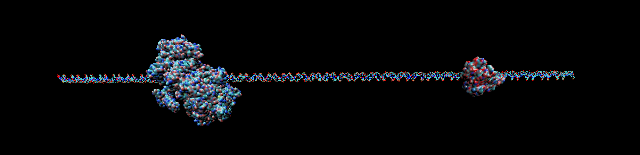

DNA PROMOTER SEQUENCE PHYSICS AT ICB RAS
Physics of DNA sequence: bacterial promoter
DNA-protein interactions represent a basis for a plethora of regulatory acts in living cell. Recent advances in molecular biology have pointed to the need in considering of additional to the nucleotide sequence of DNA features. These implies indirect DNA readout by a protein. To characterize the multi-stage process better, we can take into account several DNA physical properties together including electrostatic potential, melting parameters, shape peculiarities, etc. The approach is also promising for promoter prediction being long-standing bioinforatics task.

T7 bacteriophage's polymerases against DNA duplex: E. coli sigma-70 one against T7 native polymerase (PDB data visualised usinf VMD)
In our work at the Institute of Cell Biophysics of RAS we apply several available approaches to obtain coarse modelling information to address promoter-polymerase interplay. Our main study subjects are prokaryotic one: E. coli, Mycoplasma gallisepticum, T7 phage and its realtives (see Publications section).